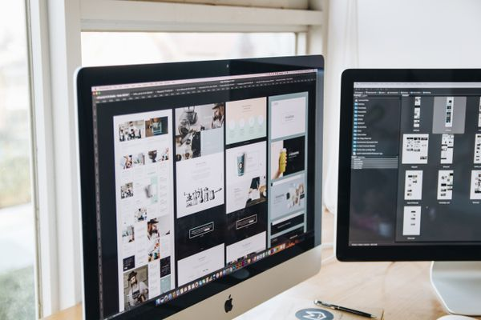
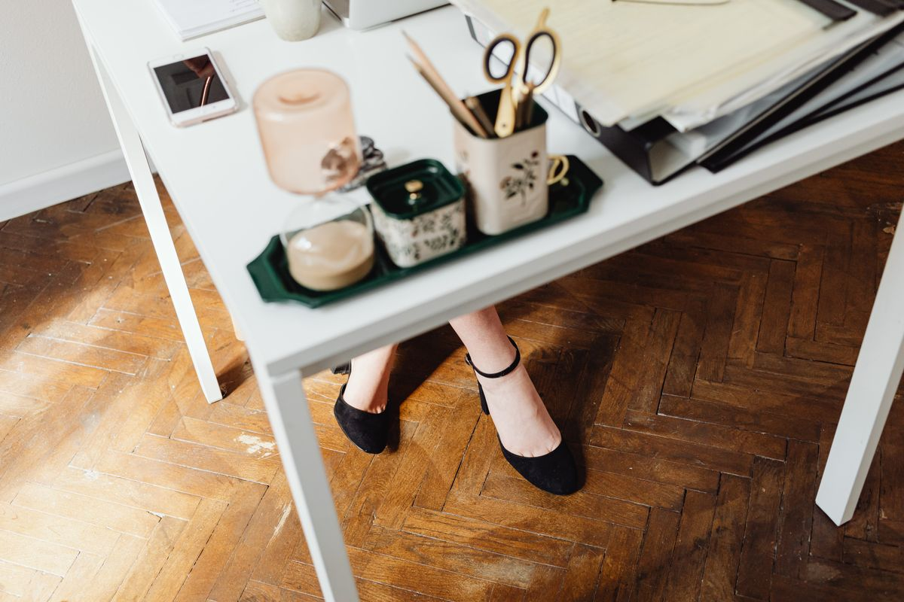
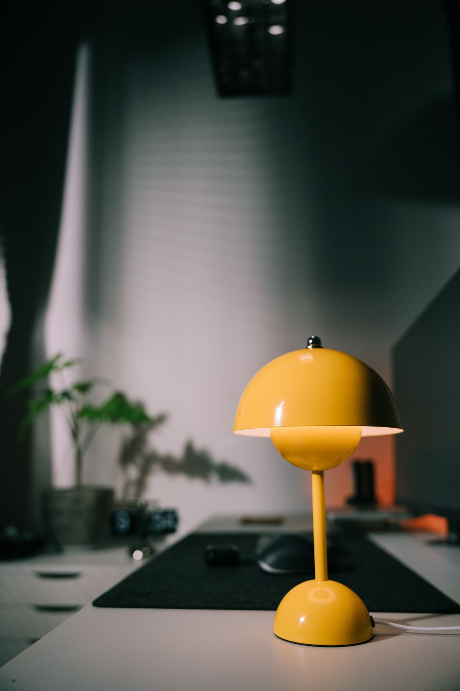
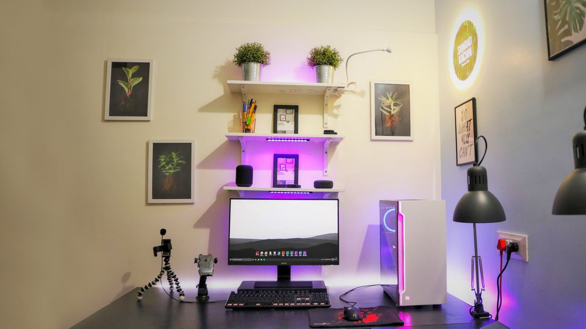
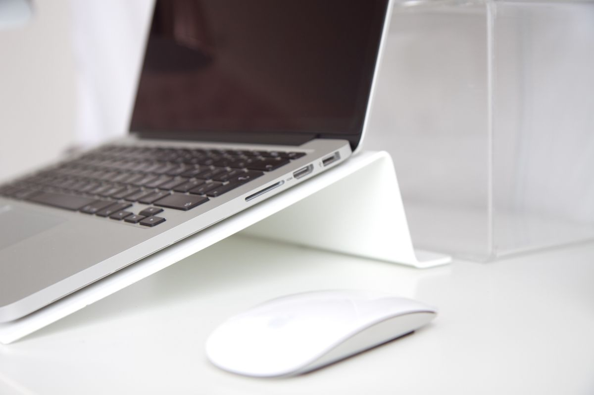
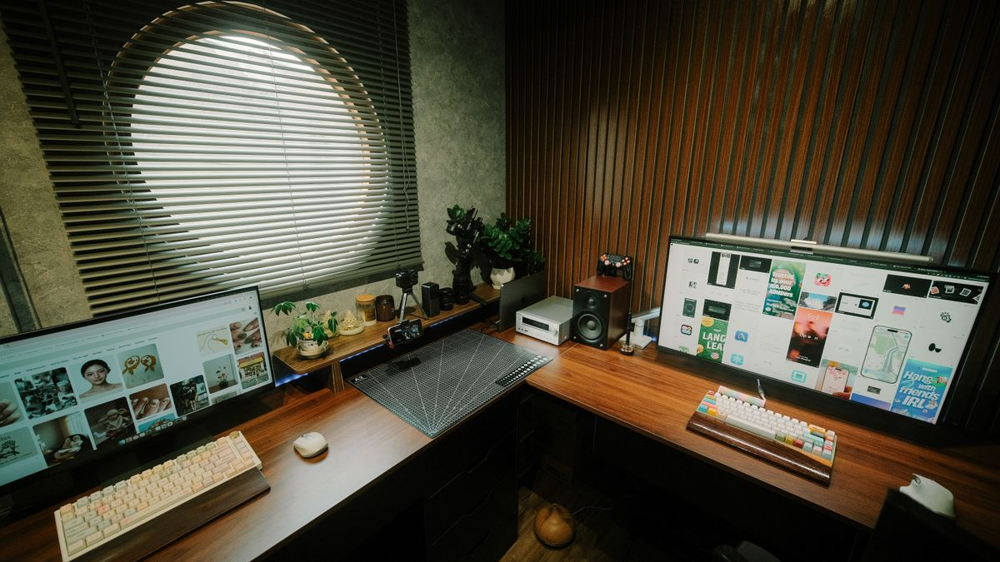
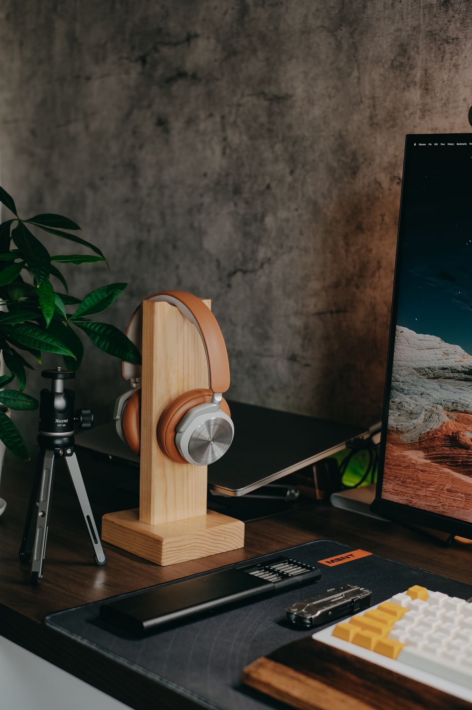
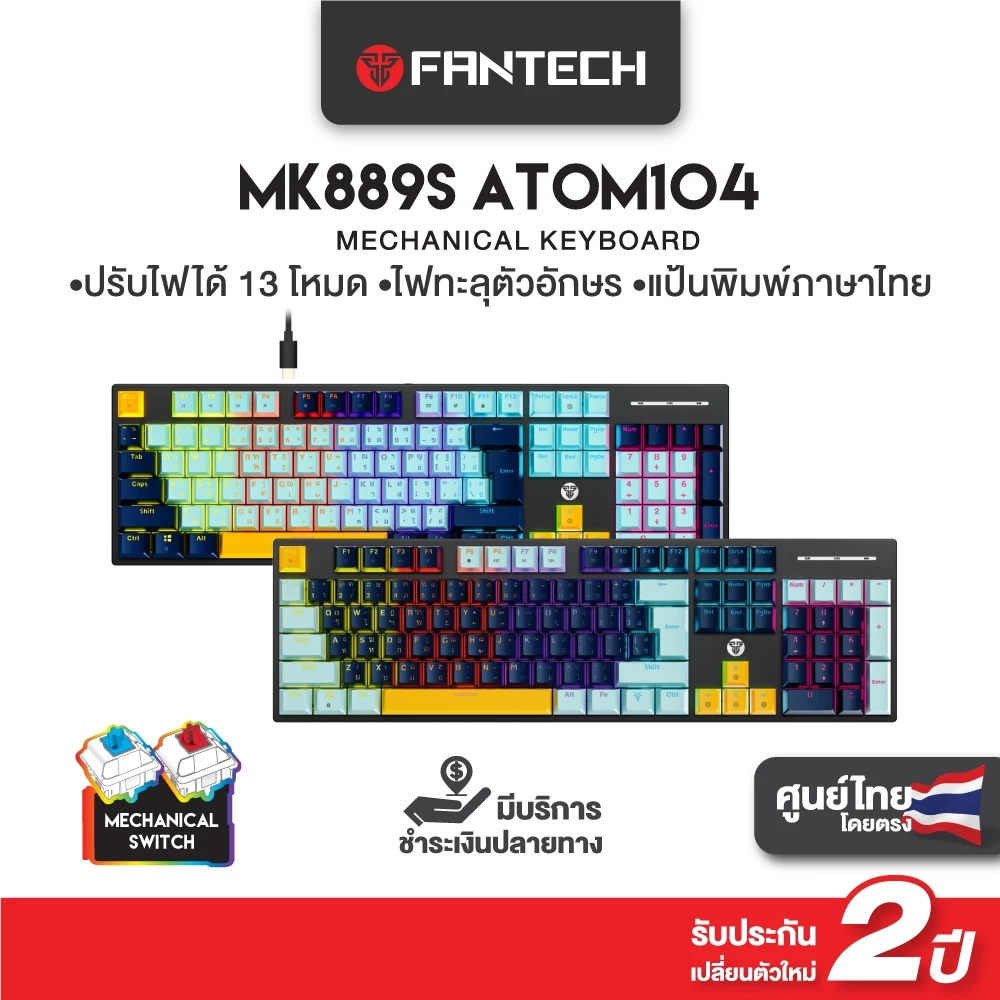
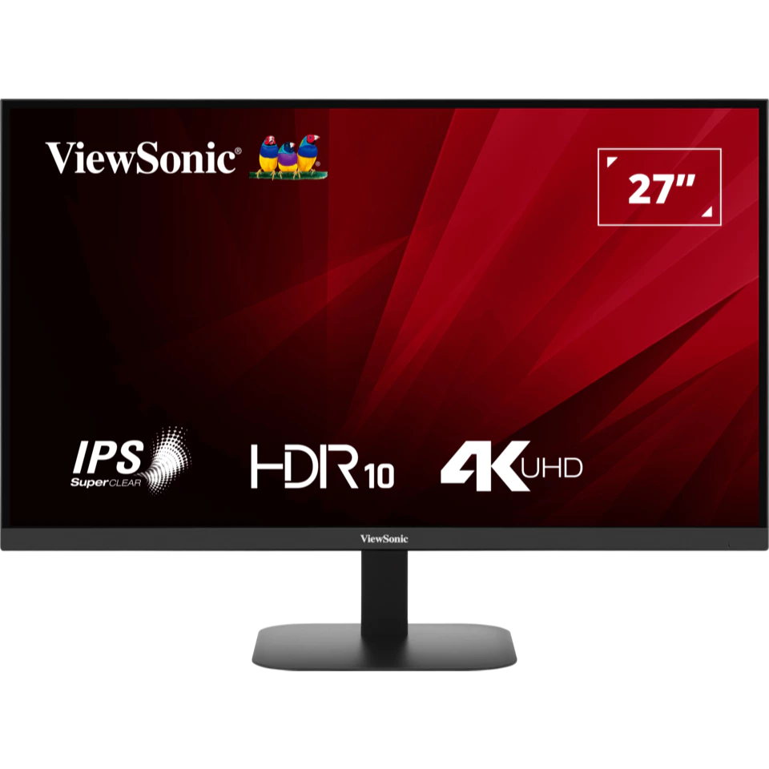
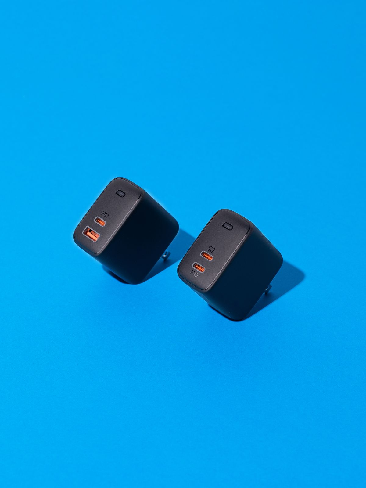

คัดสรรสำหรับคนทำงานที่บ้าน
จัดโต๊ะทำงานที่บ้าน
จัดโต๊ะทำงานที่บ้าน
ให้ลงตัวในที่เดียว
รวมอุปกรณ์และแกดเจ็ตที่คัดมาแล้ว พร้อมคู่มือเลือกซื้อ รีวิว และวิธีติดตั้ง เพื่อให้ทุกการตัดสินใจง่ายขึ้น

รวมอุปกรณ์และแกดเจ็ตที่คัดมาแล้ว พร้อมคู่มือเลือกซื้อ รีวิว และวิธีติดตั้ง เพื่อให้ทุกการตัดสินใจง่ายขึ้น


















